Inzaar: The Educational & Reformatory Movement
"Achieving eternal success through moral and intellectual development."
A structured platform bridging contemporary intellectual challenges with timeless spiritual values.
Dedicated to facilitating individual self-reflection and societal reformation.
Dr. Rehan Ahmed Yousufi
(Abu Yahya)
Founder, Visionary & Research Scholar
Founder Profile
Dr. Rehan Ahmed Yousufi (Abu Yahya) is a distinguished academic, scholar, and author pioneering modern, rational dawah and moral reform.
PhD in Islamic Studies
Specialized in the Evolution of Dawah Methodology Literature in the 20th Century Subcontinent.
Academic Training
Holds a Master's degree in Islamic Studies & Computer Technology, and M.Phil. in Social Sciences.
Milestone Publications
Author of numerous highly influential books, including the modern milestone novel Jab Zindagi Shuru Hogi (When Life Begins).
The Core Vision
"Achieving eternal success through character building."
Cultivating balanced individuals who are highly successful in both this life and the Hereafter.
Establishing a sustainable model for modern ethical and Islamic youth development.
The Core Mission
Scope of Work
Providing accessible educational, counseling, dawah, and media services.
Strengthening the collective understanding of faith and moral responsibility in modern society.
Helping individuals refine and mold their personalities to meet high ethical standards.
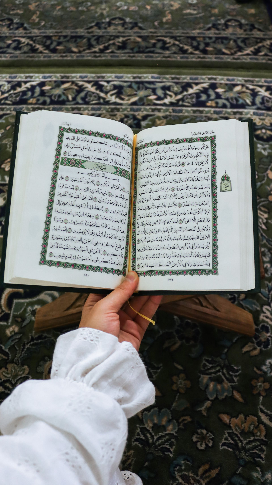
Philosophy of Dawah
"Reforming human personality on the basis of the Quran and Sunnah."
Focusing on internal conviction, sincerity, and rational scriptural understanding rather than blind compliance.
Highlighting conscious preparation for the life after death as the primary, motivating goal of human existence.
Cultivating Faith and Morality
Promoting moral values and raising ethical awareness across society.
Patience
Fostering resilience, calm endurance, and perseverance through life's tests.
Integrity
Maintaining absolute honesty, righteousness, and upright moral conduct.
Virtues
Nurturing personal modesty, inner purity, and intellectual honesty.
Positive Mindset
Encouraging constructive thinking and optimistic outlooks under all conditions.
Rights and Obligations
Building a balanced understanding of divine and social responsibilities.
Rights of the Creator
- done Raising deep awareness of monotheism and submission to God.
- done Direct, conscious devotion based on sincerity and scriptural roots.
Rights of His Creation
- done Empowering individuals to become beneficial members of society.
- done Advancing peace, compassion, justice, and community-wide support.
Forbearance & Rationality
Resolving individual and collective issues through logic and patience instead of emotionalism and superstitions.
Fostering emotional stability, self-control, and critical thinking is key to navigating modern societal challenges.
Guiding the community to approach modern crises with intellectual maturity and calm reflection instead of reactionary emotions.
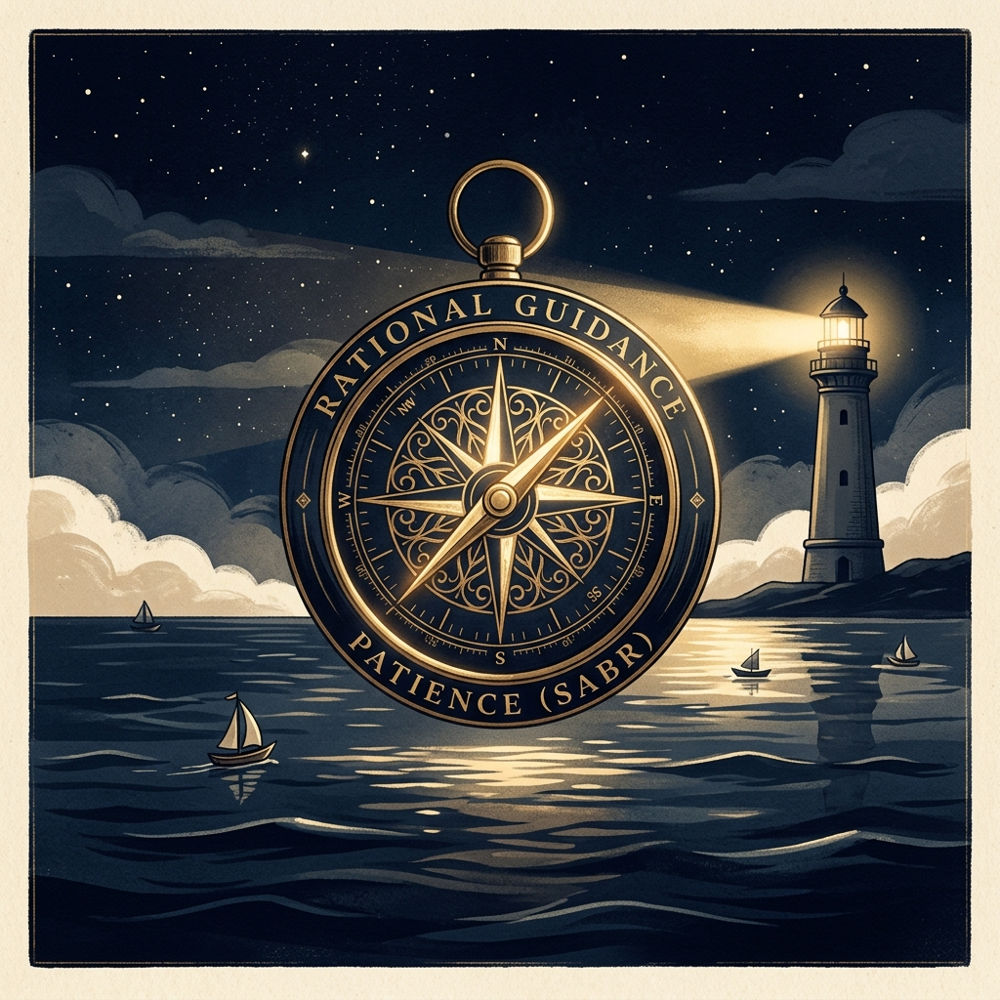
Intellectual Discourse
Inculcating an academic culture of rational analysis.
Analyzing socio-religious matters through academic logic, scientific rigor, and research scholarship.
Encouraging a research-oriented mindset to protect individuals and youth against ideological extremes.
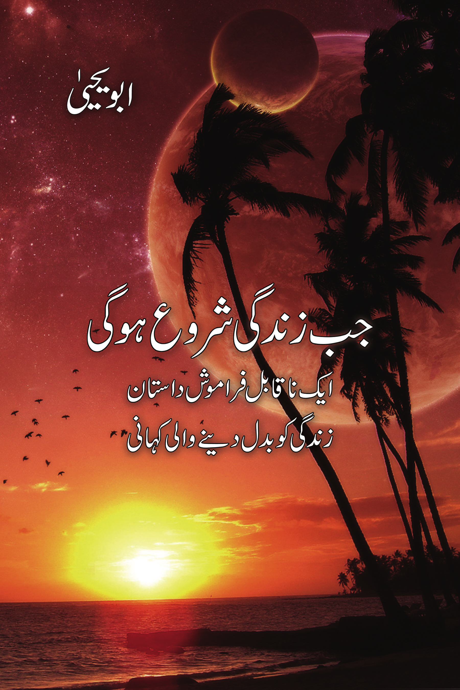

Literary Impact: "When Life Begins"
The landmark, life-changing novel on belief in God and the Hereafter.
Originally published as Jab Zindagi Shuru Hogi, this book has been read by millions and translated globally into multiple languages.
Provides a highly detailed, narrative-driven depiction of the Day of Judgment and accountability to inspire immediate moral reform.
The Faith Fiction Trilogy
A unique series of novels addressing complex theology and beliefs through engaging storytelling.
JAB ZINDAGI SHURU HOGI
(When Life Begins)Lays the theological foundation of accountability, death, and resurrection in the afterlife.

QASAM US WAQT KI
(By That Time)Explores human history, divine principles of accountability, and moral warnings.

AAKHRI JANG
(The Last War)Depicts the ultimate struggles between truth and falsehood in the modern intellectual arena.
Cinematic Dawah: "Insaan Ki Kahani"
A Documentary Landmark
A high-end documentary series visually presenting rational proofs of monotheism, prophethood, and the Hereafter. Conceived, written, narrated, and presented by Dr. Rehan Ahmed Yousufi (Abu Yahya), it addresses modern challenges like atheism and strengthens faith in the Creator.
Season 1 & Season 2
Explores the moral rise and fall of historical civilizations through visits to archaeological sites and analysis of global history.
Written & Presented by: Dr. Rehan Ahmed Yousufi (Abu Yahya)
Contemplation: "Khol Ankh Zameen Dekh"
Observation and spiritual self-reflection through global travel.
East Asia Study
A deep, reflective travelogue covering seven countries in East Asia, detailing cultures and lifestyles.
Signs of the Creator
Encourages the reader to observe the signs of the Creator and understand diverse human behaviors globally.
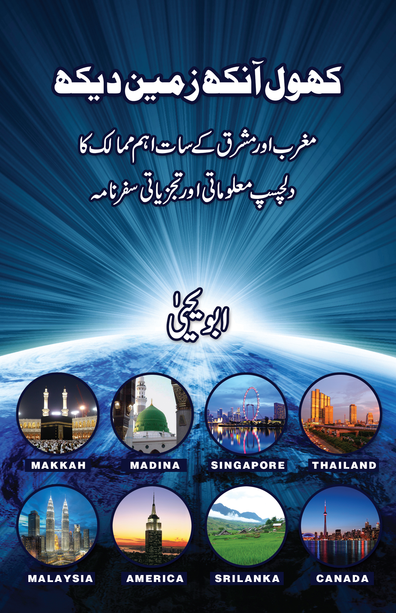
Publications Catalog
Comprehensive works on belief, travel, and personal reformation by Abu Yahya (Click cover for details).
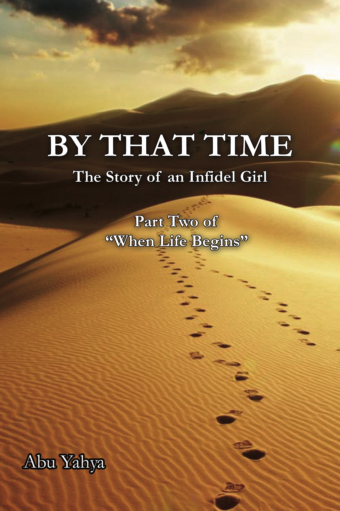
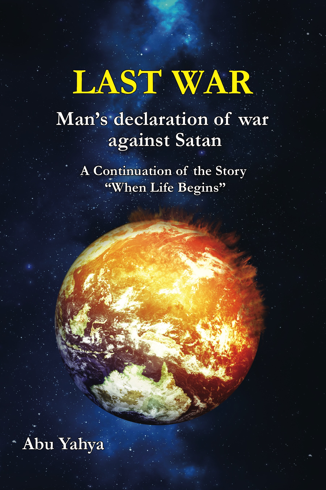
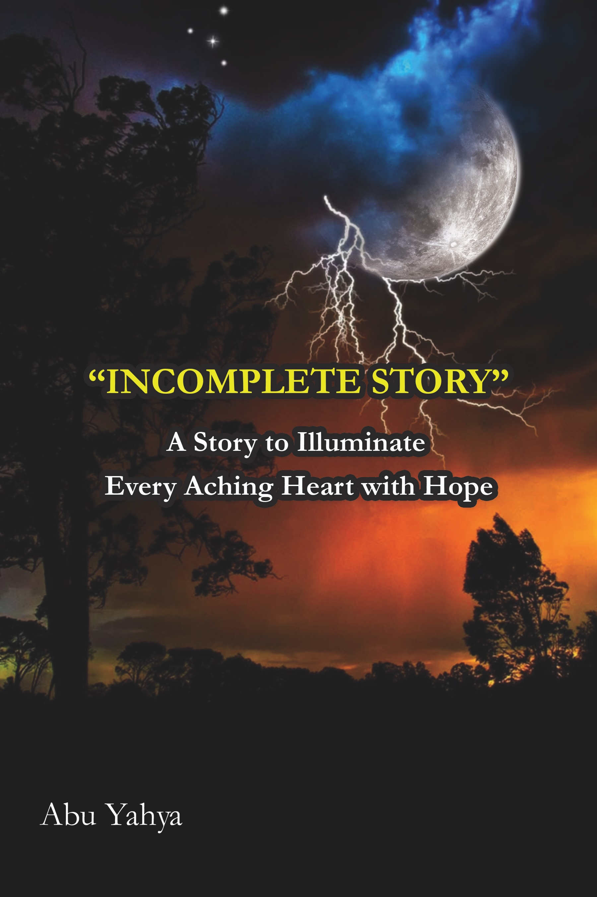
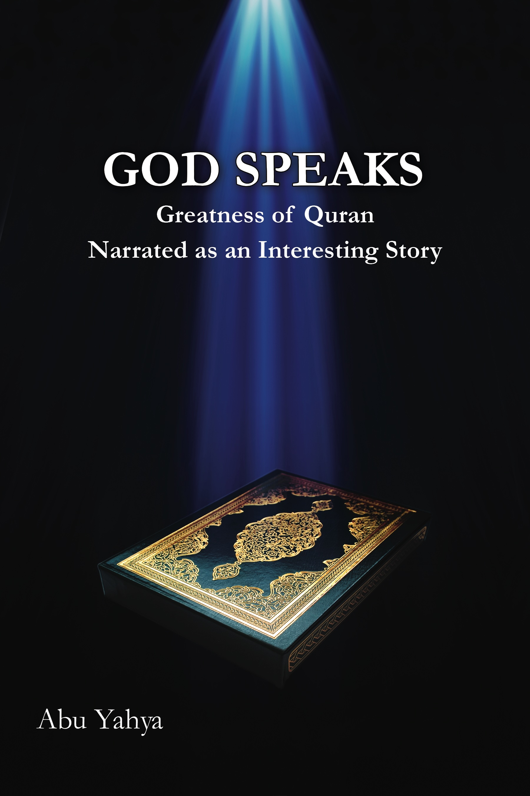


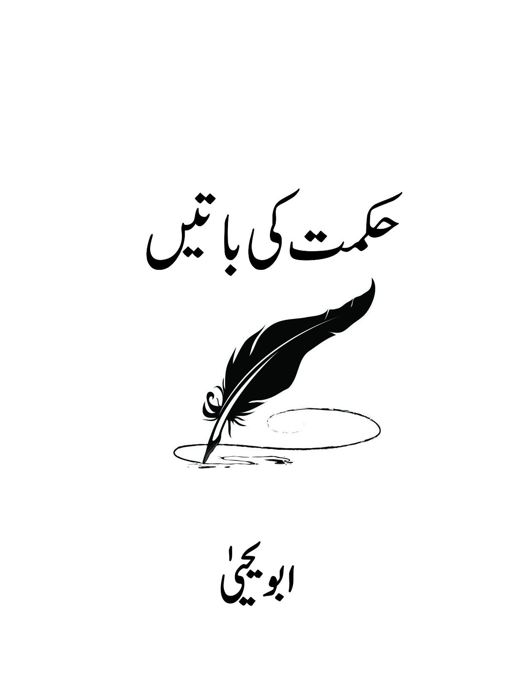
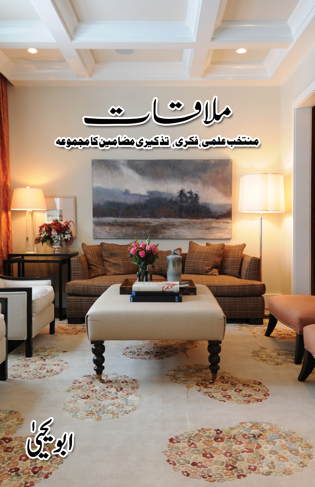
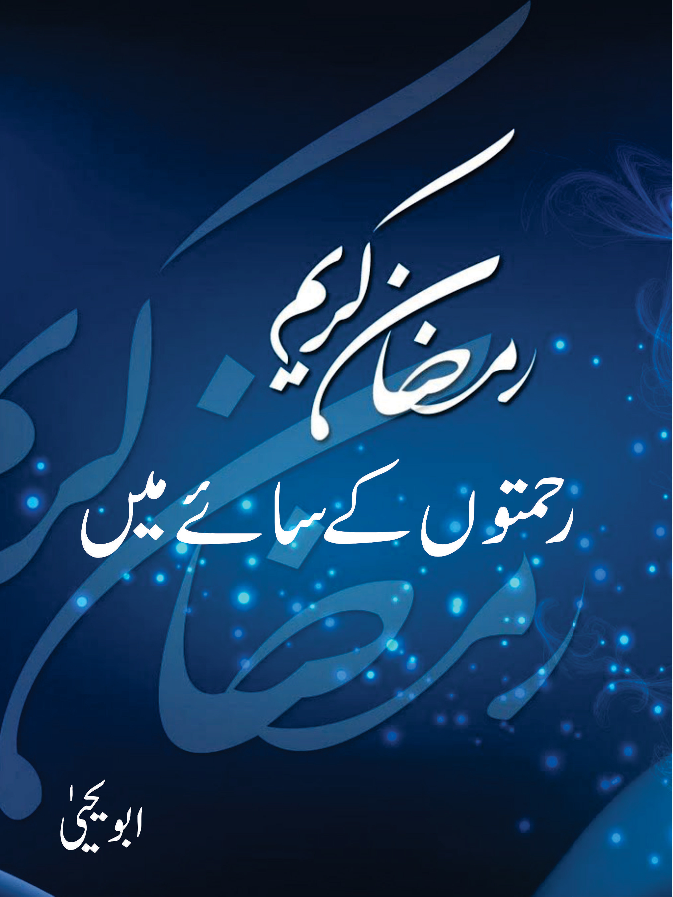

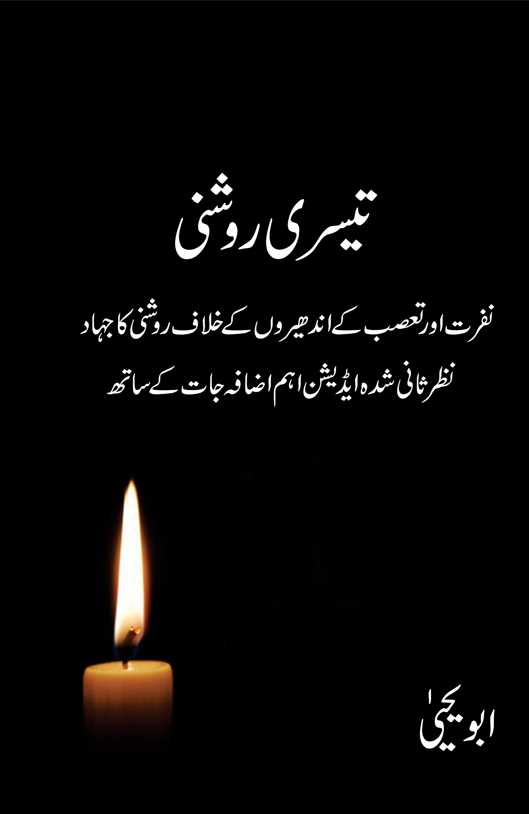
Global Translations Department
Expanding Our Intellectual Reach
Translating foundational literature to share Inzaar's intellectual and reformatory message with a global audience. By converting core Urdu novels and articles, we bridge linguistic barriers.
- translateWhen Life Begins: The complete English translation of Dr. Rehan Ahmed Yousufi’s (Abu Yahya) life-changing novel, *Jab Zindagi Shuru Hogi*.
- translateBy That Time: The complete English translation of the sequel novel, *Qasam Us Waqt Ki*.
- translateArabic Translation: Academic work in progress to translate the core message of *Jab Zindagi Shuru Hogi* into Arabic.
- translateArticle Translations: Regular translation of socio-religious and reformatory articles into English.
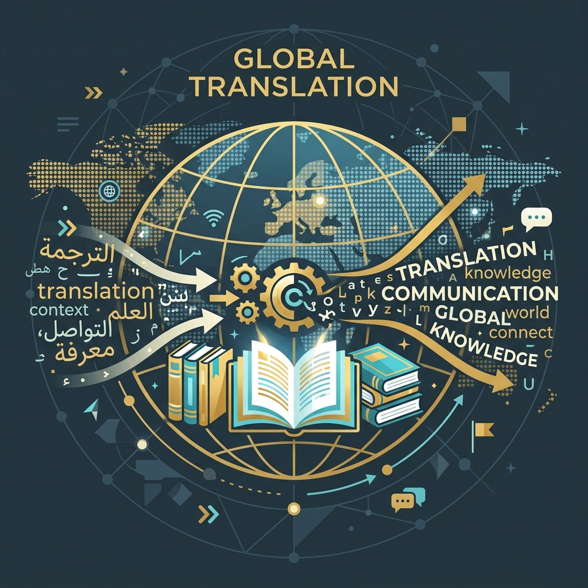
Monthly Inzaar Magazine & Gift Books
Literature Distribution & Recognition
Spreading moral awareness through targeted literature distribution, print and audio media, and honoring academic high-achievers.
- menu_bookMonthly Inzaar Magazine: A dedicated print and audio journal covering socio-religious themes, dispatched via post directly to monthly subscribers.
- card_membershipGift Books Initiative: Free literature distributed annually to high-achieving students of Matric, Intermediate, and O/A Levels.
- domainInstitutional Support: Providing free book packages directly to school libraries, academic institutions, and local volunteers.
Direct Public Outreach: National Book Fairs
Engaging the Community Directly
Introducing reformatory and character-building literature directly to the general public by participating in major national book exhibitions.
- storefrontMajor Exhibitions: Inzaar regularly participates in annual book fairs across major cities, including Karachi, Lahore, and Islamabad.
- groupsDirect Interaction: Creating a physical space for youth, scholars, and families to engage with Inzaar’s team and publications.
- local_shippingExpanding Access: Facilitating onsite distribution of hard-copy translations, novels, and magazine subscriptions.
Reaching Hearts Globally
Alhamdulillah — Spanning the Globe
By the grace of the Almighty, our message of moral and spiritual reform continues to span the globe, touching hearts and inspiring individuals toward personal reform.
- favoriteSincere Dawah: Sincere dawah efforts and volunteer dedication are blessed with widespread international resonance.
- languageTimeless Guidance: Bridging cultural and geographical boundaries to deliver accessible spiritual direction to seekers worldwide.
Global YouTube Engagement
Alhamdulillah — Blessed Milestones
Spreading moral and spiritual education across digital boundaries, and building a global audience committed to self-reflection.
- smart_displayMoral Video Dawah: Spreading visual dawah that strengthens faith and moral accountability.
- groupsActive Learners: A large international base engaged with documentary and lecture content.
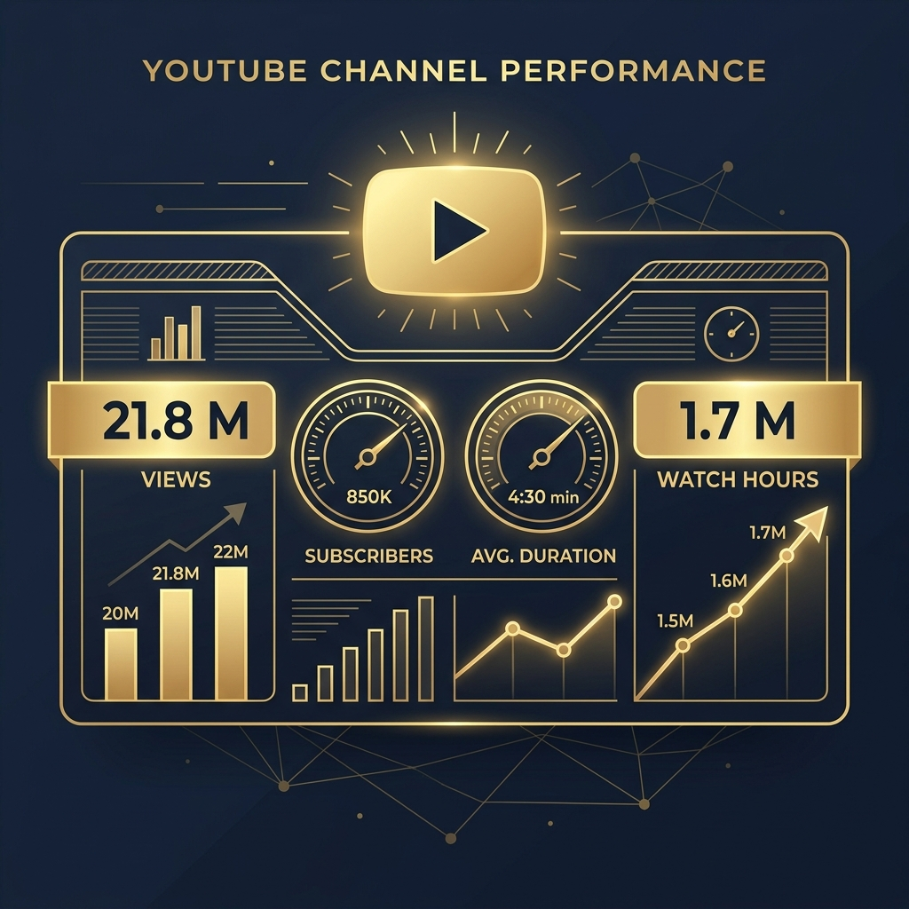
Reaching Globally: Top Geographies
Alhamdulillah — Spanning Multiple Continents
Connecting seekers of truth and delivering modern, rational Islamic discourse to diverse international audiences across key territories.
- travel_exploreAccessible Education: Overcoming geographical barriers to provide free, accessible moral resources globally.
Multi-Platform Digital Outreach
Alhamdulillah — A Vast Online Community
Leveraging Facebook to build a vast online community of faith and good morals, utilizing social media to facilitate personality development on a global scale.
- thumb_upDaily Engagement: Sharing moral literature, Quranic insights, and articles to encourage spiritual reform.
- shareVolunteer Synergy: Engaging supporters globally to extend Inzaar's digital footprint.
Online Educational System
Structured online courses designed to systematically reform personality and belief.
Value-Based Upbringing (VBU) Program
Raising a Better Generation
A unique developmental sittings platform by Inzaar Educational Institute designed to nurture young minds (aged 5 to 19 years) through weekly interactive sittings on Mondays and Thursdays.
Registration: RS 1500 per student.
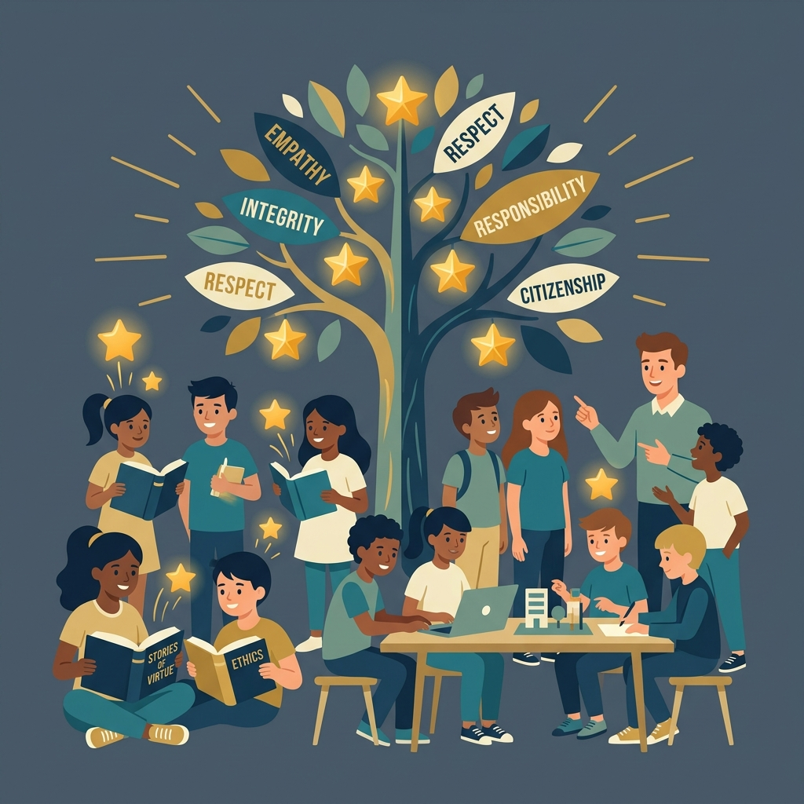
VBU Stage-1: Kids Summer Camp
Early Childhood Character Building
Exposing our youngest students to core moral principles and character education through structured online learning.
VBU Stage-2: Children's Summer Camp
Pre-Teen Discipline & Values
Fostering personal discipline, positive daily habits, and moral awareness specifically for pre-teens.
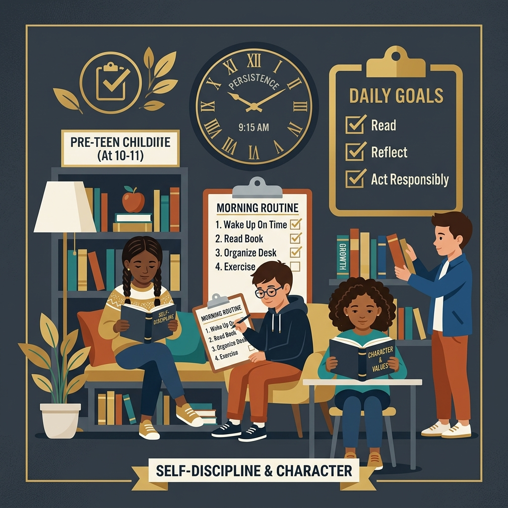
VBU Stage-3: Teen-Age Summer Camp
Resilience & Strength for Teenage Girls
A dedicated developmental platform designed exclusively for teenage girls, focusing on self-awareness, emotional resilience, confidence, and spiritual strength.
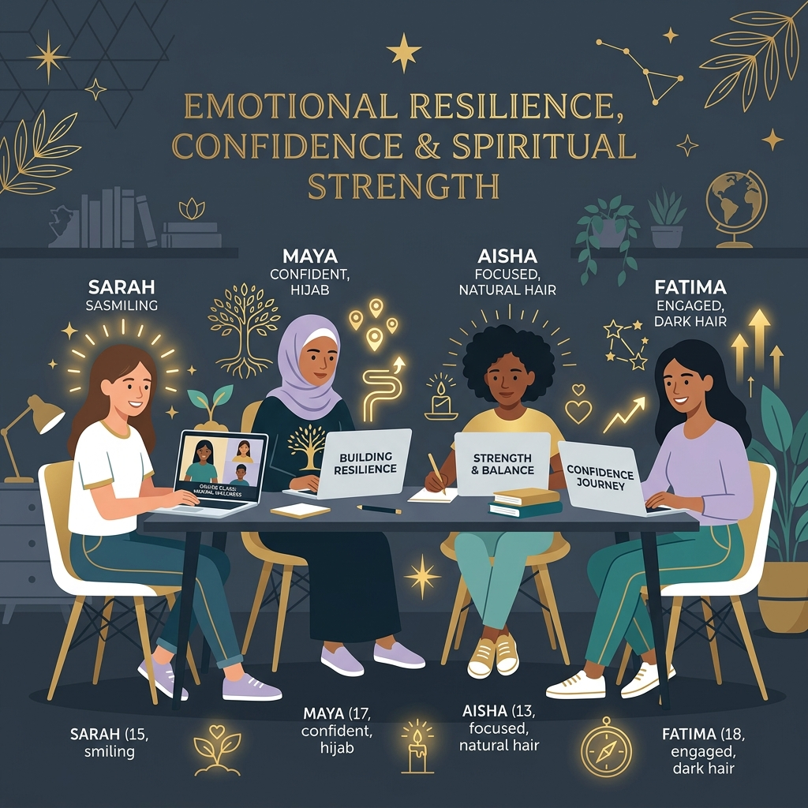
Character & Righteousness Courses
Practical training to align daily behavior and intention with ethical standards.
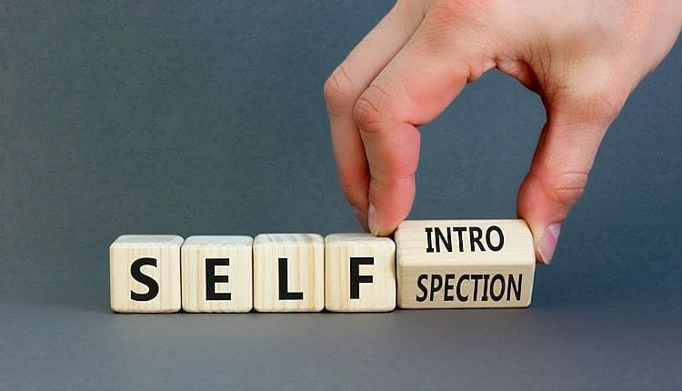
Self-PacedSelf-Introspection Course
Character is a person's most valuable asset. This course provides practical training for self-awareness, identifying flaws, and purification of the soul.
Amal-e-Saleh Course
Part 1: Nijat ka Rasta (Path to Success). Studying the critical link between internal conviction and outward righteous actions as defined by the Quran.
Quran ka Rabbani Insaan
A structured short course examining the specific qualities, morals, and habits that elevate a believer to become 'Rabbani' (divinely oriented) in life.
Foundational Faith Courses
Establishing, validating, and internalizing core monotheistic beliefs.
Imaniyaat Course
Core of the Nijat ka Rasta series. Establishes the intellectual foundations of monotheism, belief in the hereafter, and navigating life's tests.
Quran ka Matloob Insaan
A lecture series detailing the complete profile and characteristics of the ideal human being desired by God, as described across the Holy Quran.
'Tauheed' Course
Comprising 14 lectures, this course provides a deep academic and spiritual study of monotheism and rational proofs for the existence and unity of the Creator.
Applied & Devotional Courses
Deepening standard devotional practices and understanding scriptural claims.
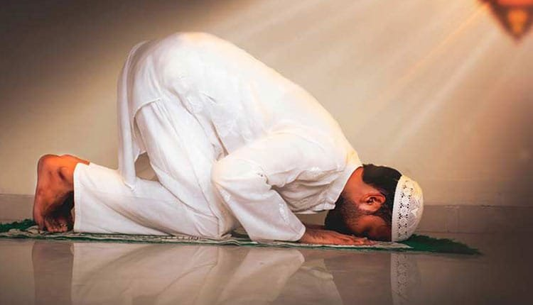
Self-PacedCourse “Namaz”
Re-establishing daily prayer (Salah) as a conscious, direct, and living connection with God, rather than a robotic ritual.
Dalail aur Ahwal e Akhrat
A 10-lecture course analyzing the rational proofs of the life after death, the end of the universe, and the various events of the Day of Judgment.
“Nabuwat and Risalat”
Examines the necessity, logical arguments, and history of divine guidance through prophets, highlighting their role in reforming human societies.
Language & Personal Development
Equipping students with scriptural comprehension and emotional resilience.
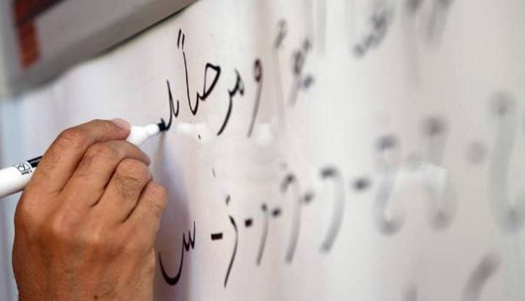
Self-PacedArabic Course
A lecture-based language course designed to teach Quranic Arabic, enabling students to directly understand the vocabulary and grammar of the Quran.
Course “Stress Management”
Coping with life's difficulties, disappointments, and anxieties using spiritual wisdom and practical self-regulation keys from Islamic traditions.
The Spiritual Retreat Initiative
Dawah, Purification & Moral Outcomes
A dedicated platform hosting immersive spiritual retreats that serve as sanctuaries away from urban distractions, helping individuals evaluate and elevate their spiritual health.
- volunteer_activismCore Dawah Focus: Promoting Tazkiyah (self-purification) and self-introspection to build a conscious connection with the Creator.
- spaIntrospective Sanctuary: Offering structured training programs focused on personal character building and assessing spiritual progress.
- trending_upPositive Outcomes: Participants achieve emotional stability, develop consistent positive moral habits, and lead reform efforts in their local communities.
- publicGlobal Outreach: Gathering international groups in key regional hubs (such as Dubai and Saudi Arabia) to unite on character development and moral reform.
Retreat Documentary & Overview
International Retreat Highlights
Global Q&A Department
Addressing religious, psychological, and domestic queries without creed-based bias.
Caters to thousands of questions sent by individuals worldwide via modern digital platforms.
Provides clear, peace-oriented, and balanced guidance to dispel common religious misconceptions and doubts.
Counseling Services
Providing free, confidential talk therapy for emotional and psychological support.
Experienced Volunteers
Dedicated male and female volunteer counselors with extensive experience in providing emotional and psychological support.
Empowering Individuals
Empowers struggling individuals to face life's challenges, discover their purpose, and build self-confidence.
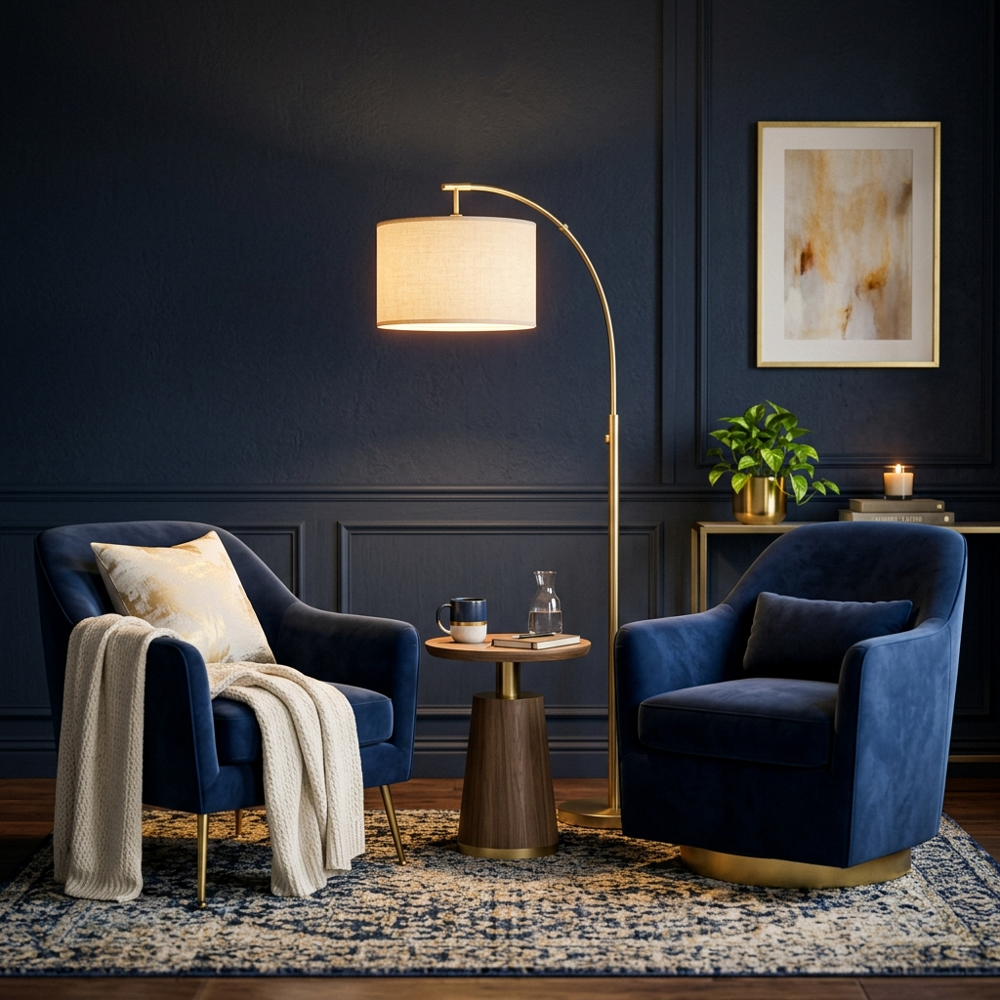
Social Welfare Initiatives
Actively executing the moral and compassionate teachings of faith on the ground.
A Volunteer-Driven Movement
"Driven by sincerity, powered by volunteers, and dedicated to eternal success."
While Inzaar maintains a core team of dedicated employees to manage day-to-day operations, our movement relies heavily on the major contributions of volunteers who donate their professional skills, time, and hearts.
By volunteering your time or making financial contributions, you play a vital role in keeping our educational programs, publications, and counseling services free of cost for everyone.
Volunteer & Team Synergy
Combining a dedicated staff with extensive volunteer support to maximize operational reach while keeping administrative costs minimal.
Sadaqah Jariyah
Your support acts as a continuous charity, educating hearts and minds, and offering spiritual comfort to those in distress.
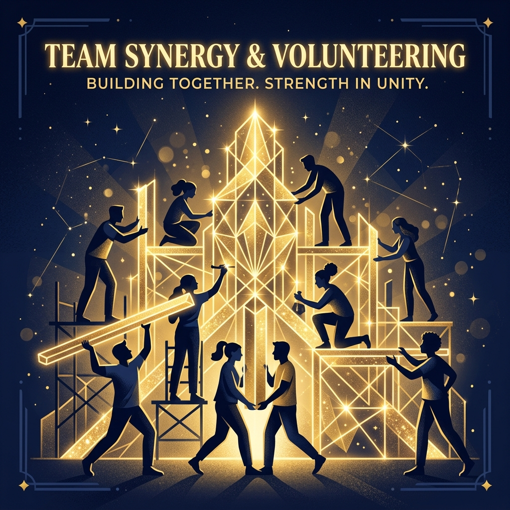
Join the Mission
A collective, non-profit platform powered by the dedication of volunteers.
Practical Support
Volunteering time, energy, and professional skills for educational and reform programs.
Intellectual Support
Assisting with academic research, global translation, and digital media production.
Financial Support
Contributing donations to keep all courses, publications, and counseling services entirely free of cost.
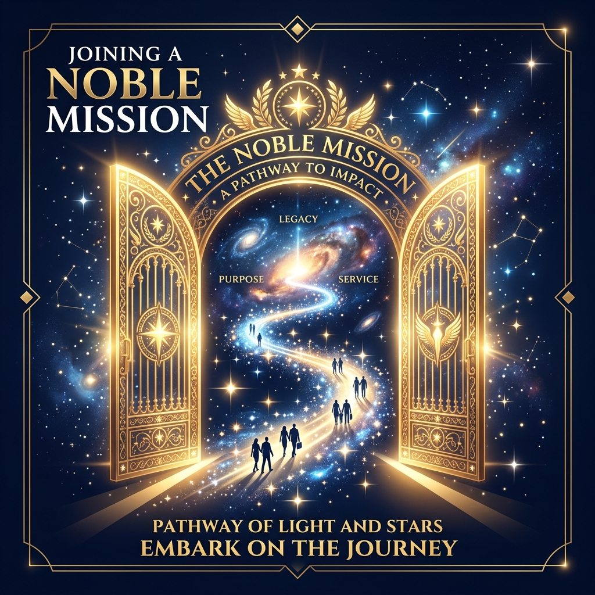